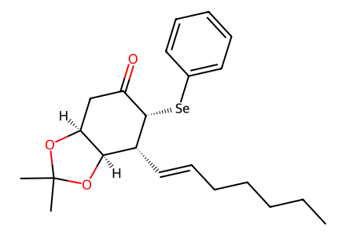
CCCCC/C=C/[C@@H]1[C@H]2OC(C)(C)O[C@H]2CC(=O)[C@@H]1[Se]c1ccccc123 molecular records, 21 preparation/control events, 6 paths. All successful forward preparations in main Schemes 2/3 and experimental sections, plus drawn failed-attempt side products 7 and 9. Isolated intermediates 18, 19 and 20 are expanded. Known enone 4 is the evidence boundary; its cited preparation from D-quinic acid is not reconstructed. Mechanistic metal enolate 5, literature comparator 13, natural-product survey structures and DFT model 1a are not preparative nodes. SI contains spectra/DFT, not additional preparations. Canonical isomeric SMILES; independent chemical review pending.
完整 JSON · 逐步 CSV · 路线序列 · SDF · HRMS 核对
| 事件 | 分子连接 | 报告产率 | Canonical reaction SMILES |
|---|---|---|---|
| V01 | 4 + hept-1-yne → 3alpha + 3beta | 68% combined mixture yield | C#CCCCCC.CC1(C)O[C@H]2CC(=O)C=C[C@H]2O1>>CCCCC/C=C/[C@@H]1[C@H]2OC(C)(C)O[C@H]2CC(=O)[C@@H]1[Se]c1ccccc1.CCCCC/C=C/[C@@H]1[C@H]2OC(C)(C)O[C@H]2CC(=O)[C@H]1[Se]c1ccccc1 |
| V02 | 3alpha + 3beta → 8 | 8: 70% | CCCCC/C=C/[C@@H]1[C@H]2OC(C)(C)O[C@H]2CC(=O)[C@@H]1[Se]c1ccccc1.CCCCC/C=C/[C@@H]1[C@H]2OC(C)(C)O[C@H]2CC(=O)[C@H]1[Se]c1ccccc1>>CCCCC/C=C/C1=CC(=O)C[C@@H]2OC(C)(C)O[C@H]12 |
| V03 | 8 → 2-RS | 2-RS: 49% | CCCCC/C=C/C1=CC(=O)C[C@@H]2OC(C)(C)O[C@H]12>>CCCCC/C=C/C1=CC(=O)C[C@H](O)[C@@H]1O |
| V04 | 2-RS + formaldehyde → 1-RS | 1-RS: 48% | C=O.CCCCC/C=C/C1=CC(=O)C[C@H](O)[C@@H]1O>>CCCCC/C=C/C1=C(CO)C(=O)C[C@H](O)[C@@H]1O |
| V05 | 4 + hept-1-yne → 6 | 6: 91% | C#CCCCCC.CC1(C)O[C@H]2CC(=O)C=C[C@H]2O1>>CCCCC/C=C/[C@H]1CC(=O)C[C@@H]2OC(C)(C)O[C@@H]21 |
| V06 | 6 → 10 | 10: 98% | CCCCC/C=C/[C@H]1CC(=O)C[C@@H]2OC(C)(C)O[C@@H]21>>CCCCC/C=C/[C@H]1CC(=O)C=C[C@@H]1O[Si](C)(C)C(C)(C)C |
| V07A | 10 → 11 + 12 | 11: 88%; 12: 2% | CCCCC/C=C/[C@H]1CC(=O)C=C[C@@H]1O[Si](C)(C)C(C)(C)C>>CCCCC/C=C/[C@H]1CC(=O)[C@@H]2O[C@@H]2[C@@H]1O[Si](C)(C)C(C)(C)C.CCCCC/C=C/[C@H]1CC(=O)[C@H]2O[C@H]2[C@@H]1O[Si](C)(C)C(C)(C)C |
| V07B | 10 → 12 + 11 | 12: 77%; 11: 20% | CCCCC/C=C/[C@H]1CC(=O)C=C[C@@H]1O[Si](C)(C)C(C)(C)C>>CCCCC/C=C/[C@H]1CC(=O)[C@@H]2O[C@@H]2[C@@H]1O[Si](C)(C)C(C)(C)C.CCCCC/C=C/[C@H]1CC(=O)[C@H]2O[C@H]2[C@@H]1O[Si](C)(C)C(C)(C)C |
| V08 | 11 → 14 | 14: 72% | CCCCC/C=C/[C@H]1CC(=O)[C@H]2O[C@H]2[C@@H]1O[Si](C)(C)C(C)(C)C>>CCCCC/C=C/[C@@H]1[C@@H](O[Si](C)(C)C(C)(C)C)[C@@H]2O[C@@H]2C(=O)[C@H]1[Se]c1ccccc1 |
| V09 | 14 → 18 | 18: 78% | CCCCC/C=C/[C@@H]1[C@@H](O[Si](C)(C)C(C)(C)C)[C@@H]2O[C@@H]2C(=O)[C@H]1[Se]c1ccccc1>>CCCCC/C=C/C1=CC(=O)[C@H]2O[C@H]2[C@@H]1O[Si](C)(C)C(C)(C)C |
| V10 | 18 → 15 | 15: 94% | CCCCC/C=C/C1=CC(=O)[C@H]2O[C@H]2[C@@H]1O[Si](C)(C)C(C)(C)C>>CCCCC/C=C/C1=CC(=O)[C@H]2O[C@H]2[C@@H]1O |
| V11 | 15 → 2-RR | 2-RR: 95% | CCCCC/C=C/C1=CC(=O)[C@H]2O[C@H]2[C@@H]1O>>CCCCC/C=C/C1=CC(=O)C[C@@H](O)[C@@H]1O |
| V12 | 2-RR + formaldehyde → 1-RR | 1-RR: 48% | C=O.CCCCC/C=C/C1=CC(=O)C[C@@H](O)[C@@H]1O>>CCCCC/C=C/C1=C(CO)C(=O)C[C@@H](O)[C@@H]1O |
| V13 | 12 → 19 | 19: 95% | CCCCC/C=C/[C@H]1CC(=O)[C@@H]2O[C@@H]2[C@@H]1O[Si](C)(C)C(C)(C)C>>CCCCC/C=C/[C@@H]1[C@@H](O[Si](C)(C)C(C)(C)C)[C@H]2O[C@H]2C(=O)[C@@H]1[Se]c1ccccc1 |
| V14 | 19 + formaldehyde → 16 | 16: 91% | C=O.CCCCC/C=C/[C@@H]1[C@@H](O[Si](C)(C)C(C)(C)C)[C@H]2O[C@H]2C(=O)[C@@H]1[Se]c1ccccc1>>CCCCC/C=C/[C@@H]1[C@@H](O[Si](C)(C)C(C)(C)C)[C@H]2O[C@H]2C(=O)[C@@]1(CO)[Se]c1ccccc1 |
| V15 | 16 → 20 | 20: 64% | CCCCC/C=C/[C@@H]1[C@@H](O[Si](C)(C)C(C)(C)C)[C@H]2O[C@H]2C(=O)[C@@]1(CO)[Se]c1ccccc1>>CCCCC/C=C/C1=C(CO)C(=O)[C@@H]2O[C@@H]2[C@@H]1O[Si](C)(C)C(C)(C)C |
| V16 | 20 → 17 | 17: 94% | CCCCC/C=C/C1=C(CO)C(=O)[C@@H]2O[C@@H]2[C@@H]1O[Si](C)(C)C(C)(C)C>>CCCCC/C=C/C1=C(CO)C(=O)[C@@H]2O[C@@H]2[C@@H]1O |
| V17 | 17 → 1-RS | 1-RS: 77% | CCCCC/C=C/C1=C(CO)C(=O)[C@@H]2O[C@@H]2[C@@H]1O>>CCCCC/C=C/C1=C(CO)C(=O)C[C@H](O)[C@@H]1O |
| V18 | 3alpha + 3beta → 7 | not reported | CCCCC/C=C/[C@@H]1[C@H]2OC(C)(C)O[C@H]2CC(=O)[C@@H]1[Se]c1ccccc1.CCCCC/C=C/[C@@H]1[C@H]2OC(C)(C)O[C@H]2CC(=O)[C@H]1[Se]c1ccccc1>>CCCCC/C=C/[C@H]1C([Se]c2ccccc2)C(=O)C=C[C@@H]1O |
| V19A | 8 → 9 | not reported | CCCCC/C=C/C1=CC(=O)C[C@@H]2OC(C)(C)O[C@H]12>>CCCCC/C=C/c1cc(O)ccc1O |
| V19B | 8 → 9 | not reported | CCCCC/C=C/C1=CC(=O)C[C@@H]2OC(C)(C)O[C@H]12>>CCCCC/C=C/c1cc(O)ccc1O |

CCCCC/C=C/[C@@H]1[C@H]2OC(C)(C)O[C@H]2CC(=O)[C@@H]1[Se]c1ccccc1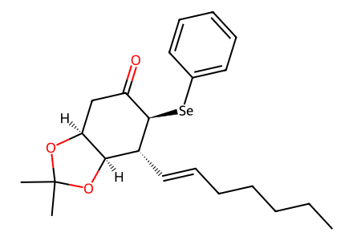
CCCCC/C=C/[C@@H]1[C@H]2OC(C)(C)O[C@H]2CC(=O)[C@H]1[Se]c1ccccc1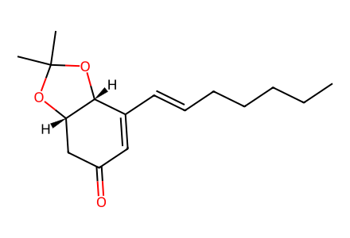
CCCCC/C=C/C1=CC(=O)C[C@@H]2OC(C)(C)O[C@H]12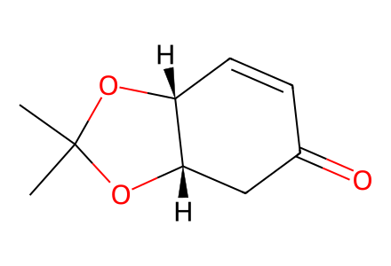
CC1(C)O[C@H]2CC(=O)C=C[C@H]2O1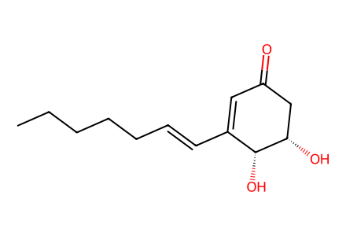
CCCCC/C=C/C1=CC(=O)C[C@H](O)[C@@H]1O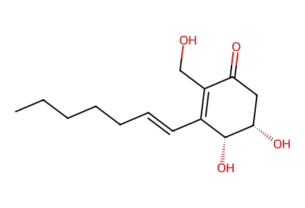
CCCCC/C=C/C1=C(CO)C(=O)C[C@H](O)[C@@H]1O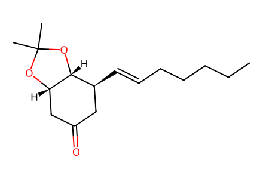
CCCCC/C=C/[C@H]1CC(=O)C[C@@H]2OC(C)(C)O[C@@H]21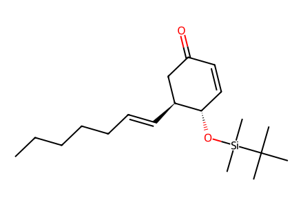
CCCCC/C=C/[C@H]1CC(=O)C=C[C@@H]1O[Si](C)(C)C(C)(C)C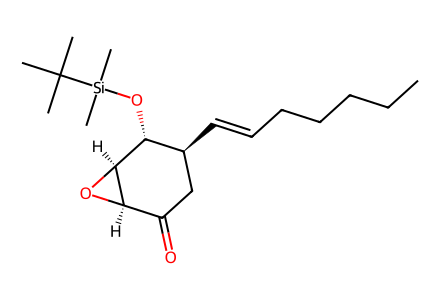
CCCCC/C=C/[C@H]1CC(=O)[C@H]2O[C@H]2[C@@H]1O[Si](C)(C)C(C)(C)C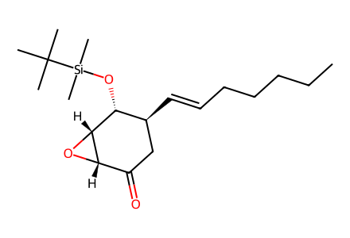
CCCCC/C=C/[C@H]1CC(=O)[C@@H]2O[C@@H]2[C@@H]1O[Si](C)(C)C(C)(C)C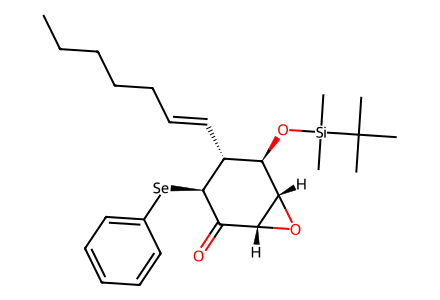
CCCCC/C=C/[C@@H]1[C@@H](O[Si](C)(C)C(C)(C)C)[C@@H]2O[C@@H]2C(=O)[C@H]1[Se]c1ccccc1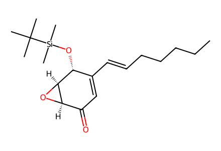
CCCCC/C=C/C1=CC(=O)[C@H]2O[C@H]2[C@@H]1O[Si](C)(C)C(C)(C)C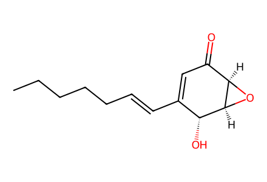
CCCCC/C=C/C1=CC(=O)[C@H]2O[C@H]2[C@@H]1O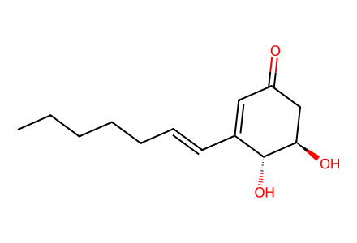
CCCCC/C=C/C1=CC(=O)C[C@@H](O)[C@@H]1O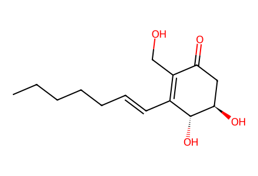
CCCCC/C=C/C1=C(CO)C(=O)C[C@@H](O)[C@@H]1O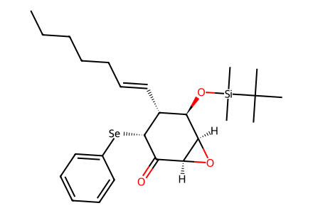
CCCCC/C=C/[C@@H]1[C@@H](O[Si](C)(C)C(C)(C)C)[C@H]2O[C@H]2C(=O)[C@@H]1[Se]c1ccccc1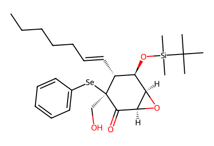
CCCCC/C=C/[C@@H]1[C@@H](O[Si](C)(C)C(C)(C)C)[C@H]2O[C@H]2C(=O)[C@@]1(CO)[Se]c1ccccc1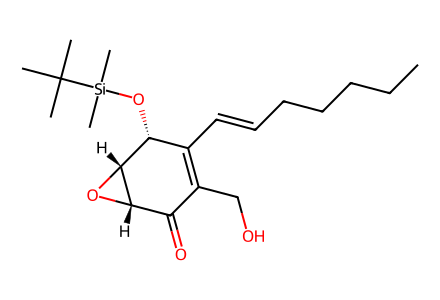
CCCCC/C=C/C1=C(CO)C(=O)[C@@H]2O[C@@H]2[C@@H]1O[Si](C)(C)C(C)(C)C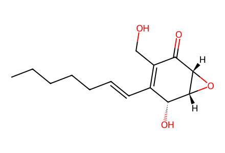
CCCCC/C=C/C1=C(CO)C(=O)[C@@H]2O[C@@H]2[C@@H]1O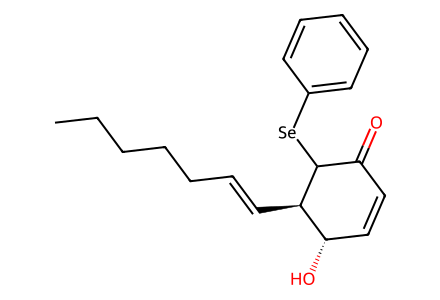
CCCCC/C=C/[C@H]1C([Se]c2ccccc2)C(=O)C=C[C@@H]1O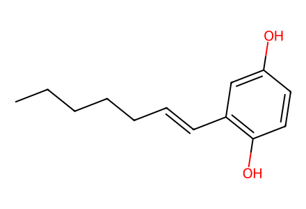
CCCCC/C=C/c1cc(O)ccc1O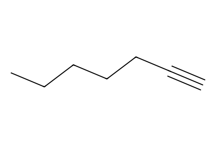
C#CCCCCC
C=O